Activos, historial de fallas, órdenes de trabajo correctivas y preventivas, técnicos asignados y repuestos utilizados.
SQLite con DB Browser for SQLite.
Informe técnico (PDF) y script tp3-gmao.sql.
Paso 1 · Conceptos de BD · Paso 2 · Entorno RDBMS — Emiliano
Paso 3 · Entidades y datos · Paso 4 · Diagrama DER — Gustavo
Paso 5 · Tablas en SQL · Paso 6 · Carga de datos — Facundo
Paso 7 · Consultas básicas — Facundo · Pasos 8 y 9 · Agrupaciones y Joins — Gonzalo
Seis máquinas, cinco técnicos de distintas especialidades y un pañol de repuestos. Las fallas generan órdenes correctivas; los planes preventivos, por calendario o por horas de uso, generan las preventivas.
| Código | Máquina | Criticidad |
|---|---|---|
| TOR-01 | Torno CNC · Haas ST-20 | ALTA |
| FRE-01 | Centro de mecanizado vertical · Haas VF-2 | ALTA |
| ROB-01 | Robot de soldadura · ABB IRB 2600 | ALTA |
| PRE-01 | Prensa hidráulica · Schuler PH 250 | MEDIA |
| CMP-01 | Compresor de tornillo · Atlas Copco GA 37 | MEDIA |
| INY-01 | Inyectora de plástico · Engel e-mac 180 | BAJA |
Tablas vinculadas por claves: la PK identifica cada fila y la FK crea el vínculo. Se usa el lenguaje SQL.
Atomicidad · Consistencia · aIslamiento · Durabilidad: los datos quedan correctos aunque haya errores o cortes.
| Relacional | NoSQL | Series temporales | |
|---|---|---|---|
| Modelo | Tablas vinculadas por claves | Documentos, clave-valor, columnas o grafos | Mediciones con marca de tiempo |
| Esquema | Fijo, definido de antemano | Flexible o sin esquema | Flexible, centrado en el tiempo |
| Consistencia | Fuerte (ACID) | Variable según el motor | Orientada a la escritura masiva |
| Uso en planta | ERP, MES, GMAO, recetas, calidad | Configuraciones, eventos | Sensores, historiador SCADA |
En una fábrica no compiten: se complementan.
Órdenes que bajan del ERP; producción y consumos que suben del MES. La integridad referencial y ACID evitan datos huérfanos o a medias.
Versiones y aprobación de la receta, y qué versión se usó en cada lote: trazabilidad.
Activos, órdenes, planes preventivos y repuestos: el escenario elegido.
Biblioteca embebida.
Fácil de copiar y entregar.
ACID, FK, CHECK, triggers.
Liviano y multiplataforma.
Un solo escritor a la vez. Un GMAO multiusuario real correría sobre PostgreSQL, SQL Server o MySQL; el SQL usado es estándar.
| Criterio | SQLite | Cliente-servidor |
|---|---|---|
| Arquitectura | Biblioteca embebida, archivo local | Servicio en un servidor, acceso por red |
| Instalación | Nula: el motor viene en la herramienta | Servicio, usuarios y permisos |
| Escritura simultánea | Un escritor a la vez | Muchos escritores |
| Entrega del trabajo | Un archivo .db | Volcado de la base |
| Uso típico | Embebido, IoT, educación, prototipos | Sistemas de planta multiusuario |
| Sistema operativo | Windows 11 Pro, 64 bits |
| Equipo | AMD Ryzen 5 5500 · 16 GB RAM |
| DB Browser | 3.13.1 · .msi 64 bits · 47 MB |
| Motor incluido | SQLite 3.46.1 |
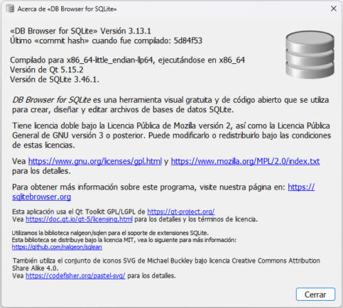
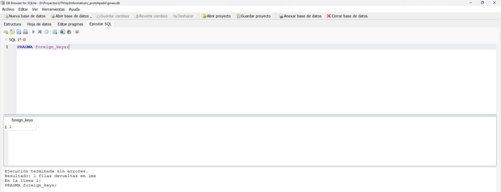
Las 5 entidades del enunciado, los planes preventivos y la tabla intermedia ot_repuestos (relación N:M).
| Tipo | Afinidad | Uso en el modelo |
|---|---|---|
| INTEGER | INTEGER | Identificadores y cantidades |
| VARCHAR(n) | TEXT | Nombres, códigos, estados |
| FLOAT | REAL | Horas, horas-hombre, costos |
| DATE | NUMERIC | Fecha de instalación |
| DATETIME | NUMERIC | Fallas, emisión y cierre |
Fechas en ISO 8601 (AAAA-MM-DD HH:MM:SS): se ordenan como texto y se comparan con BETWEEN.
| Campo | Tipo | Restricciones |
|---|---|---|
| id_ot | INTEGER | PK |
| nro_ot | VARCHAR(15) | NOT NULL, UNIQUE |
| tipo | VARCHAR(12) | NOT NULL, CHECK (CORRECTIVA, PREVENTIVA) |
| id_maquina | INTEGER | FK → maquinas, NOT NULL |
| id_plan | INTEGER | FK → planes_preventivos |
| id_tecnico | INTEGER | FK → tecnicos, NOT NULL |
| fecha_emision | DATETIME | NOT NULL |
| fecha_cierre | DATETIME | — |
| estado | VARCHAR(10) | NOT NULL, CHECK (PENDIENTE, EN CURSO, CERRADA) |
| tarea | VARCHAR(200) | NOT NULL |
| horas_hombre | FLOAT | — |
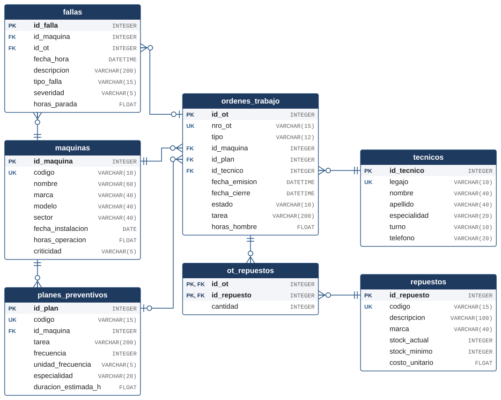
PK en las filas sombreadas, FK marcadas y UK en códigos, legajo y número de orden.
Doble barra: exactamente uno. Barra con círculo: cero o uno. Pata de gallo con círculo: cero o muchos.
Una falla puede quedar pendiente, sin orden; una orden correctiva no tiene plan.
Opcional: cada vencimiento del plan genera una OT preventiva; las correctivas no tienen plan.
Se resuelve con ot_repuestos, de clave primaria compuesta (id_ot, id_repuesto).
| Relación | Card. | Implementación |
|---|---|---|
| maquinas → fallas | 1:N | fallas.id_maquina |
| maquinas → planes | 1:N | planes_preventivos.id_maquina |
| maquinas → ordenes | 1:N | ordenes_trabajo.id_maquina |
| ordenes → fallas | 1:N opc. | fallas.id_ot (NULL) |
| planes → ordenes | 1:N opc. | ordenes_trabajo.id_plan (NULL) |
| tecnicos → ordenes | 1:N | ordenes_trabajo.id_tecnico |
| ordenes ↔ repuestos | N:M | tabla ot_repuestos |
Una OT preventiva tiene plan; una correctiva no.
Una OT preventiva es de la misma máquina que su plan.
Una falla solo se asigna a una OT correctiva de la misma máquina.
Un CHECK compara columnas de la misma fila; para consultar otra tabla, triggers.
| Restricción | Qué garantiza |
|---|---|
| PRIMARY KEY | Fila única, clave no vacía |
| FOREIGN KEY … REFERENCES | Integridad referencial |
| NOT NULL | Campo obligatorio |
| UNIQUE | Valor sin repetir |
| CHECK | Valor que cumple una condición |
maquinas, tecnicos, repuestos → planes_preventivos, ordenes_trabajo, fallas → ot_repuestos. Al final, los 4 triggers.
-- ---------------------------------------------------------------------
-- Historial de fallas (origen de las OT correctivas)
-- ---------------------------------------------------------------------
CREATE TABLE fallas (
id_falla INTEGER PRIMARY KEY,
id_maquina INTEGER NOT NULL,
id_ot INTEGER,
fecha_hora DATETIME NOT NULL,
descripcion VARCHAR(200) NOT NULL,
tipo_falla VARCHAR(15) NOT NULL,
severidad VARCHAR(5) NOT NULL
CHECK (severidad IN ('ALTA', 'MEDIA', 'BAJA')),
horas_parada FLOAT,
FOREIGN KEY (id_maquina) REFERENCES maquinas (id_maquina),
FOREIGN KEY (id_ot) REFERENCES ordenes_trabajo (id_ot)
);
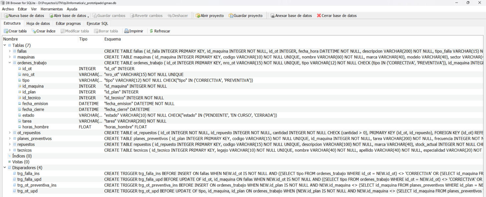
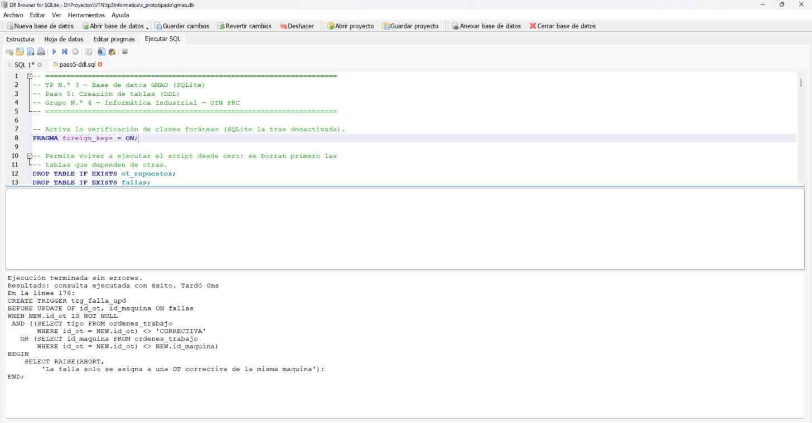
| Tabla | Reg. | Qué permite analizar |
|---|---|---|
| maquinas | 6 | Distintos sectores y criticidades |
| tecnicos | 5 | Especialidades y turnos distintos |
| repuestos | 7 | Dos por debajo del stock mínimo |
| planes_preventivos | 6 | Por días y por horómetro |
| ordenes_trabajo | 13 | 8 correctivas y 5 preventivas, 3 estados |
| fallas | 10 | El torno, el más fallado; 2 fallas en una OT; 1 pendiente |
| ot_repuestos | 6 | Consumos en correctivas y preventivas |
INSERT INTO ot_repuestos (id_ot, id_repuesto, cantidad) VALUES (1, 1, 1), (2, 3, 1), (2, 4, 1), (4, 5, 1), (7, 7, 1), (10, 2, 2);
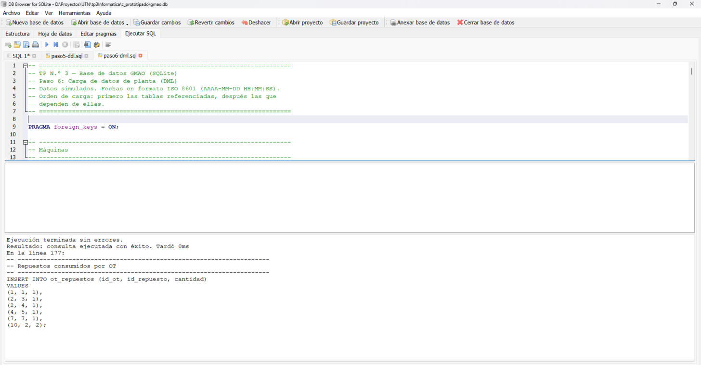
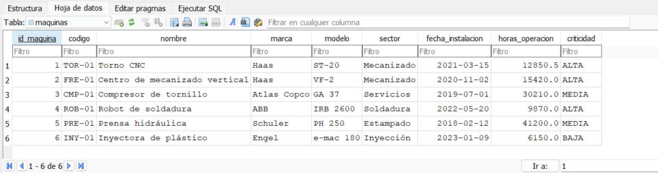
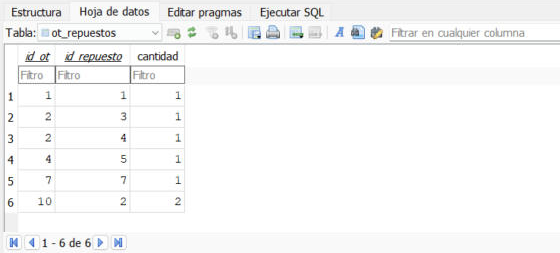
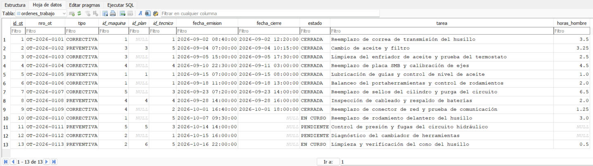
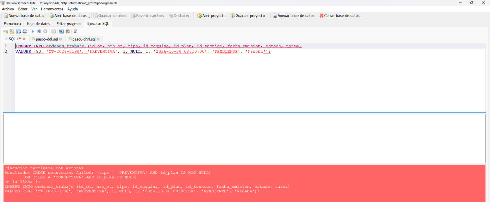
| Intento | Mensaje de SQLite |
|---|---|
| OT preventiva sin plan | CHECK constraint failed |
| OT preventiva de otra máquina que su plan | La OT preventiva debe ser de la misma maquina que su plan |
| Falla asignada a una OT preventiva | La falla solo se asigna a una OT correctiva de la misma maquina |
| Falla de una máquina inexistente | FOREIGN KEY constraint failed |
| Número de OT repetido | UNIQUE constraint failed: ordenes_trabajo.nro_ot |
| Máquina sin nombre | NOT NULL constraint failed: maquinas.nombre |
| Borrar una máquina con historial | FOREIGN KEY constraint failed |
SELECT id_falla, fecha_hora, id_maquina, descripcion, tipo_falla,
severidad, horas_parada
FROM fallas
WHERE fecha_hora BETWEEN '2026-09-15 00:00:00' AND '2026-10-10 23:59:59'
AND severidad IN ('ALTA', 'MEDIA')
ORDER BY fecha_hora;
Cinco fallas entre el 15/09 y el 10/10. La de la inyectora (12/10) queda afuera por la fecha y por su severidad baja.
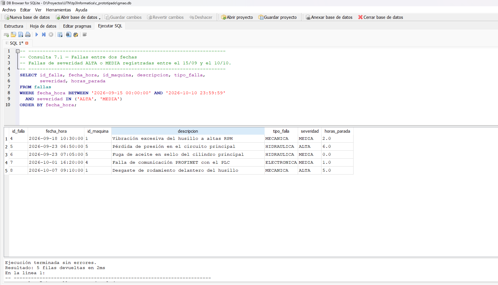
SELECT codigo, descripcion, stock_actual, stock_minimo,
stock_minimo - stock_actual AS faltante
FROM repuestos
WHERE stock_actual <= stock_minimo
ORDER BY faltante DESC, codigo;
Cuatro repuestos: el filtro del compresor y la placa SMB del robot por debajo del mínimo; la correa y el kit de sellos, justo en el mínimo.
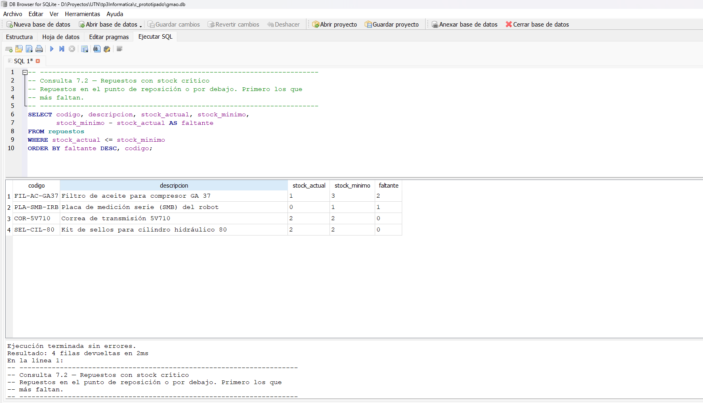
SELECT nro_ot, fecha_emision, id_maquina, id_tecnico, estado, tarea FROM ordenes_trabajo WHERE tipo = 'CORRECTIVA' AND NOT estado = 'CERRADA' ORDER BY fecha_emision;
Dos órdenes abiertas: el rodamiento del torno CNC, en curso, y el cambiador de herramientas del centro de mecanizado, pendiente.
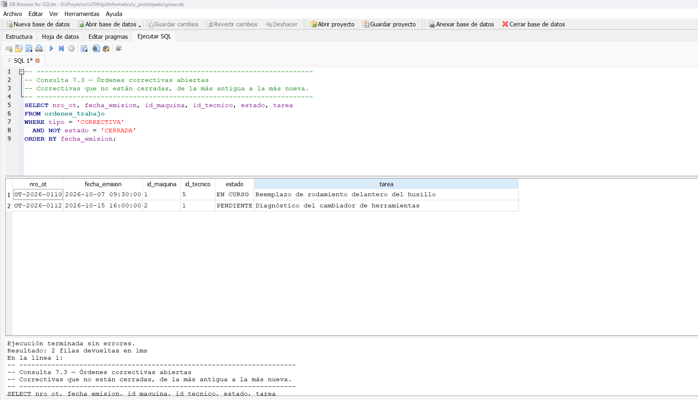
SELECT id_maquina,
COUNT(*) AS cantidad_fallas,
SUM(horas_parada) AS horas_parada_total,
MAX(fecha_hora) AS ultima_falla
FROM fallas
GROUP BY id_maquina
ORDER BY cantidad_fallas DESC, horas_parada_total DESC;
La máquina 1, el torno CNC, es el activo más crítico: 3 fallas y 10,5 h de parada, todas en el husillo. Le siguen la prensa (5) y el robot (4).
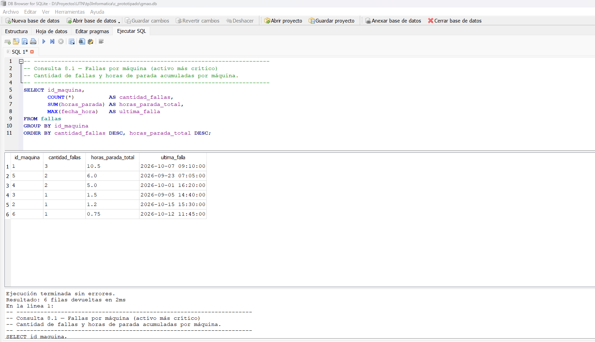
SELECT tipo,
COUNT(*) AS cantidad_ot,
SUM(horas_hombre) AS horas_hombre_total,
ROUND(AVG(horas_hombre), 2) AS horas_hombre_promedio,
MAX(horas_hombre) AS horas_hombre_maxima
FROM ordenes_trabajo
GROUP BY tipo
ORDER BY horas_hombre_total DESC;
El correctivo concentra 8 órdenes y 23,25 h, el 77,5 % de las 30 horas registradas; el preventivo, 5 órdenes y 6,75 h. Las dos pendientes no suman horas: AVG y SUM ignoran los NULL.
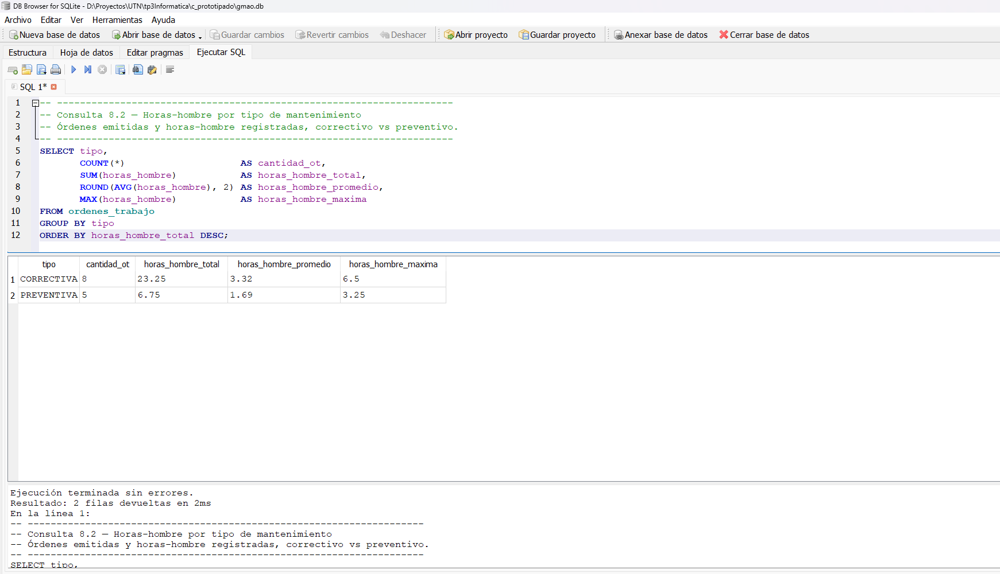
SELECT ot.nro_ot,
ot.tipo,
m.nombre AS maquina,
COALESCE(f.descripcion,
'Plan ' || p.codigo || ': ' || p.tarea) AS motivo,
t.apellido || ', ' || t.nombre AS tecnico,
ot.estado
FROM ordenes_trabajo AS ot
INNER JOIN maquinas AS m ON m.id_maquina = ot.id_maquina
INNER JOIN tecnicos AS t ON t.id_tecnico = ot.id_tecnico
LEFT JOIN fallas AS f ON f.id_ot = ot.id_ot
LEFT JOIN planes_preventivos AS p ON p.id_plan = ot.id_plan
ORDER BY ot.nro_ot, f.fecha_hora;
Máquina y técnico: obligatorios en toda orden.
Falla y plan dependen del tipo de orden. Con INNER se perderían las 5 preventivas.
Muestra en una columna la falla o la tarea del plan.
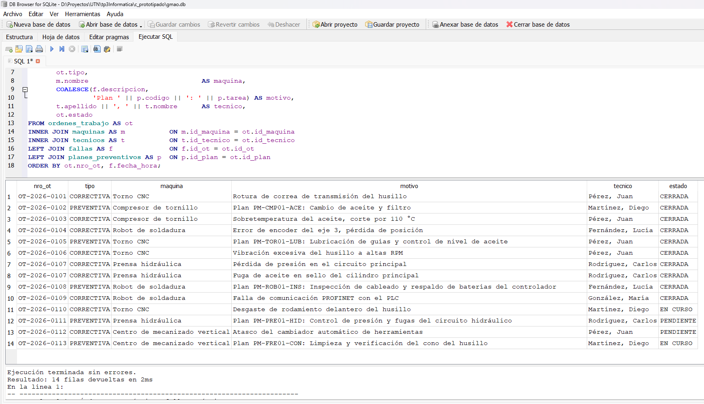
Cada orden con el nombre de la máquina, el motivo y el técnico, en lugar de sus identificadores.
La falla de la inyectora no figura: todavía no tiene orden, y la consulta parte de las órdenes.
SELECT ot.nro_ot,
m.nombre AS maquina,
r.descripcion AS repuesto,
otr.cantidad,
r.costo_unitario,
otr.cantidad * r.costo_unitario AS costo_total
FROM ot_repuestos AS otr
INNER JOIN ordenes_trabajo AS ot ON ot.id_ot = otr.id_ot
INNER JOIN maquinas AS m ON m.id_maquina = ot.id_maquina
INNER JOIN repuestos AS r ON r.id_repuesto = otr.id_repuesto
ORDER BY ot.nro_ot, r.descripcion;
Seis consumos por $ 2.396.100. La placa SMB del robot ($ 1.850.000) explica el 77 % del gasto, y su stock quedó en cero (consulta 7.2).
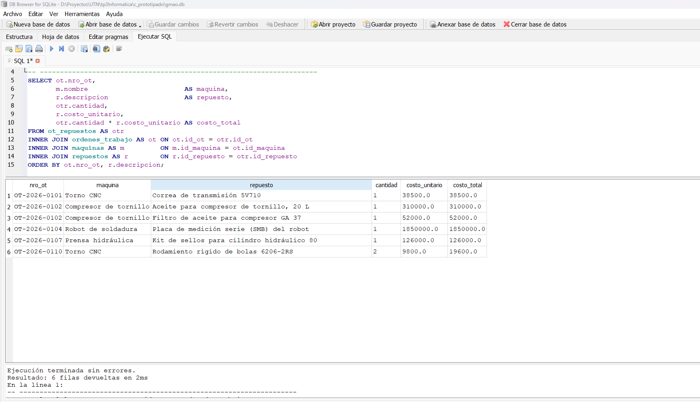
| Fase | Paso | Tarea | Evidencia en el informe | Págs. |
|---|---|---|---|---|
| I | 1 | Conceptos de BD | Clasificación (Tabla 1), ISA-95 (Fig. 2), tres usos | 5–8 |
| I | 2 | Entorno RDBMS | SQLite, requisitos (Tablas 2–3), DB Browser (Figs. 3–6) | 8–13 |
| II | 3 | Entidades y datos | Tipos (Tabla 4) y estructura de las 7 tablas (Tablas 5–11) | 14–20 |
| II | 4 | Diagrama DER | DER con PK y FK (Fig. 7), relaciones y reglas (Tablas 12–13) | 20–23 |
| III | 5 | Tablas en SQL | CREATE TABLE y triggers; ejecución y estructura (Figs. 8–9) | 24–29 |
| III | 6 | Carga de datos | INSERT INTO; tablas pobladas e integridad (Figs. 10–18) | 30–37 |
| IV | 7 | Consultas básicas | 3 consultas con WHERE y ORDER BY (Figs. 19–21) | 38–42 |
| IV | 8 | Agrupaciones | 2 consultas con GROUP BY (Figs. 22–23) | 42–45 |
| IV | 9 | Joins avanzados | 2 consultas con INNER y LEFT JOIN (Figs. 24–25) | 45–47 |
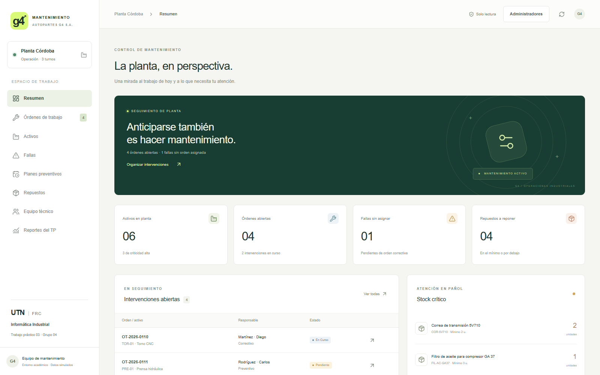
Las mismas 7 tablas, las reglas del modelo, los datos del TP y las 7 consultas. Consulta pública.